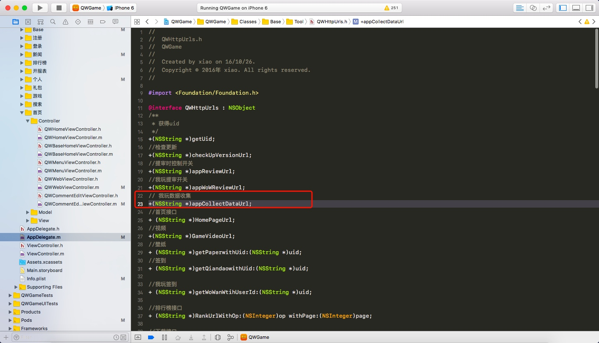
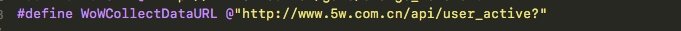
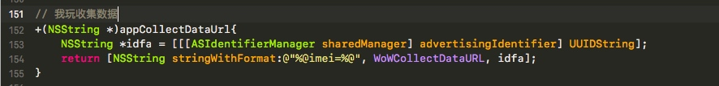
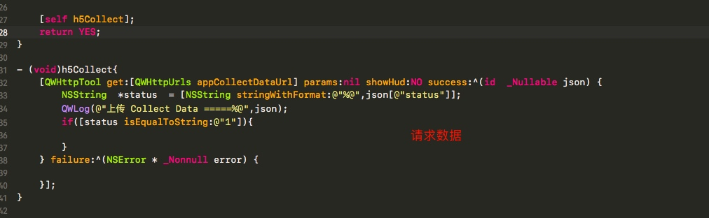

- 接入 初始化
- YourAppToken 是后台创建的 iOS 端只需要调用就行

SDK 开发
在SDK开发中，一般会需要经过几个流程，
# 开发SDK
# 测试SDK
# 把SDK交付给使用人员
这些东西看似步骤多，过程繁琐，而且每修改一次SDK就需要重复一次上述的过程，增加了一些不必要的操作。
当然，如果我们在SDK设计之初就有一个好的项目架构，就可以极大简化开发流程，提高开发效率.

pushToViewControllerWhenClickPushMessageWith - 这个是极光推送的方法
#pragma mark -- 程序点击推送消息进入的方法
// iOS 10 Support
- (void)jpushNotificationCenter:(UNUserNotificationCenter *)center didReceiveNotificationResponse:(UNNotificationResponse *)response withCompletionHandler:(void (^)())completionHandler {
// Required
NSDictionary * userInfo = response.notification.request.content.userInfo;
if([response.notification.request.triggerisKindOfClass:[UNPushNotificationTriggerclass]]) {
[JPUSHServicehandleRemoteNotification:userInfo];
[selfpushToViewControllerWhenClickPushMessageWith:userInfo]; //跳转页面
}
completionHandler(); // 系统要求执行这个方法
}
#pragma mark -- 程序跳转方法
-(void)pushToViewControllerWhenClickPushMessageWith:(NSDictionary*)msgDic{
//将字段存入本地，因为要在你要跳转的页面用它来判断
NSUserDefaults*pushJudge = [NSUserDefaultsstandardUserDefaults];
// [pushJudge setObject:@"push"forKey:@"push"];
//判断后台传送的标示（用于跳转哪一个页面的判断）
if ([[msgDicobjectForKey:@"type"]isEqualToString:@"active"]){
//得到根部控制器
TabBarController *hxl=(TabBarController *)self.window.rootViewController;
//得到控制器中的导航栏
UINavigationController *nav=hxl.selectedViewController;
//得到导航栏对应的控制器
UIViewController *controller=(UIViewController *)nav.visibleViewController;
//进行跳转页面
TSProductDetailViewController *pro=[[TSProductDetailViewControlleralloc]init];
pro.detailid=[[msgDicobjectForKey:@"id"]integerValue];
[controller.navigationControllerpushViewController:pro animated:YES];
}elseif ([[msgDicobjectForKey:@"type"]isEqualToString:@"dynamics"]){
TabBarController *hxl=(TabBarController *)self.window.rootViewController;
hxl.selectedIndex=2;
}
}
#pragma mark iOS 10 前台收到通知（远程推送和本地通知）
- (void)jpushNotificationCenter:(UNUserNotificationCenter *)center willPresentNotification:(UNNotification *)notification withCompletionHandler:(void (^)(NSInteger))completionHandler {
NSDictionary * userInfo = notification.request.content.userInfo;
if([notification.request.triggerisKindOfClass:[UNPushNotificationTriggerclass]]) {
/// iOS10处理远程推送
[JPUSHServicehandleRemoteNotification:userInfo];
/// 前台收到推送的时候转成本地通知 ===========================
[self popAlert:userInfo];
}else{
/// iOS10处理本地通知添加到通知栏 ==============================
completionHandler(UNNotificationPresentationOptionBadge|UNNotificationPresentationOptionSound|UNNotificationPresentationOptionAlert);
}
// 需要执行这个方法，选择是否提醒用户，有Badge、Sound、Alert三种类型可以选择设置
}
//在前台的时候 我这里就直接弹出提示框
-(void)popAlert:(NSDictionary *)pushMessageDic{
NSLog(@"%@",pushMessageDic);
NSString *title;
if([[pushMessageDicobjectForKey:@"type"]isEqualToString:@"active"])
{
title=@"您有新的活动推送";
[JCAlertViewshowTwoButtonsWithTitle:titleMessage: [[pushMessageDicobjectForKey:@"aps"]objectForKey:@"alert"]ButtonType:JCAlertViewButtonTypeCancelButtonTitle:@"取消"Click:^{
} ButtonType:JCAlertViewButtonTypeDefaultButtonTitle:@"查看"Click:^{
[selfpushToViewControllerWhenClickPushMessageWith:pushMessageDic];
}];
}elseif([[pushMessageDic objectForKey:@"type"]isEqualToString:@"dynamics"]){
title=@"您有新的评论消息";
[JCAlertViewshowOneButtonWithTitle:titleMessage:[[pushMessageDicobjectForKey:@"aps"]objectForKey:@"alert"]ButtonType:JCAlertViewButtonTypeCancelButtonTitle:@"取消"Click:^{
}];
}
}
测试数据
1- 
2 - 
3 - 
4 - 
架构